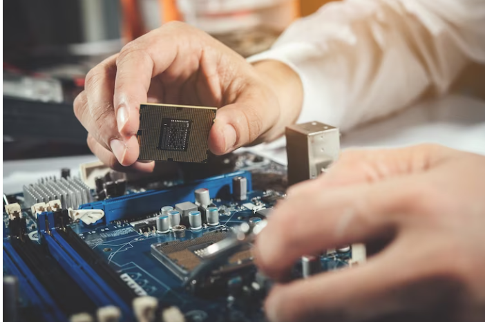
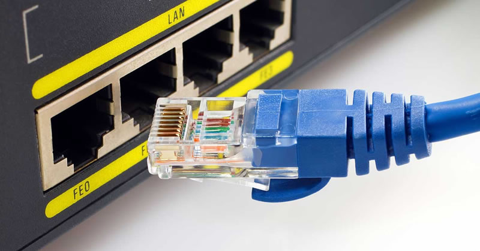

Servicios de Reparación

Reparación de Hardware
Reparamos y reemplazamos componentes dañados, como placas madre, discos duros, tarjetas de video, etc.

Reparación de Software
Resolvemos problemas de software, eliminamos virus, optimizamos el rendimiento y realizamos actualizaciones.

Soluciones de Redes
Configuramos y solucionamos problemas de conectividad de redes, tanto cableadas como inalámbricas.